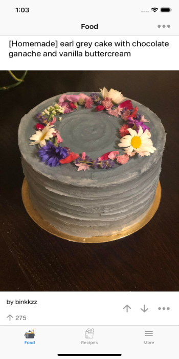

Foodie's Table
GifRecipes & Food Photography
Get Inspired by the best recipes & food around the world. A feed from the best Food subreddits from Reddit. Food prepared by chefs, homemakers and amateurs. Be amazed by the creativity in the culinary world around you.
• GIF Recipes
• Food
From Steaks to Ice creams, Pasta to Garlic Naan find the best homemade food around the world. You can find gorgeous food around the world.

Foodie's TableContact Us